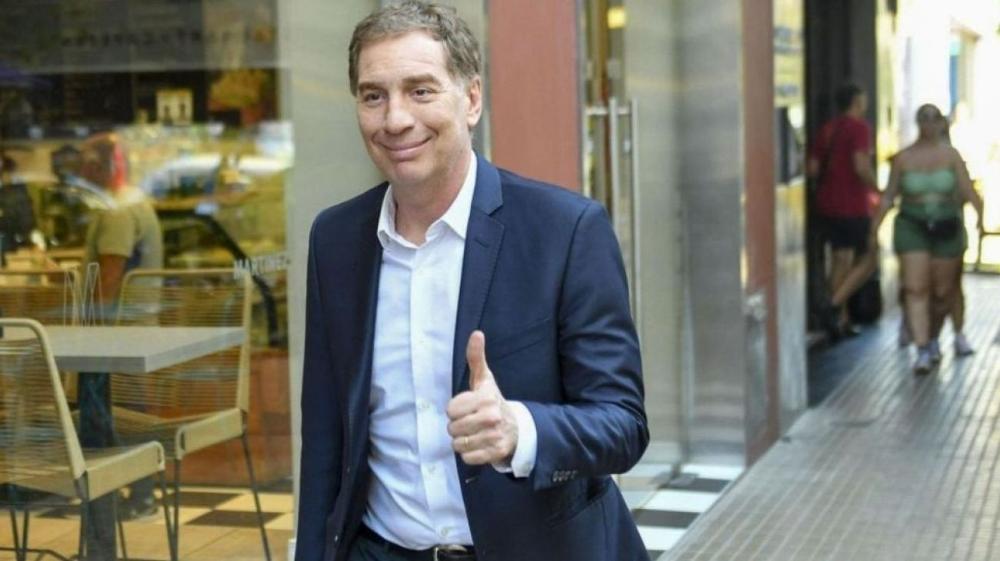

Santilli designó a Juan Pablo Limodio como nuevo titular de la Dirección Nacional Electoral
El exfuncionario del PRO asume en el organismo clave para la implementación de la reforma electoral que impulsa el gobierno, en un movimiento que refuerza la alianza entre La Libertad Avanza y el macrismo.

El ministro del Interior, Diego Santilli, designó a Juan Pablo Limodio como nuevo titular de la Dirección Nacional Electoral, el organismo técnico dependiente del Ministerio del Interior que tiene a su cargo la organización, coordinación y supervisión de los procesos electorales en el país. Limodio es un exfuncionario con trayectoria dentro del PRO y asume en un momento de alta sensibilidad institucional: el gobierno acaba de enviar al Congreso el proyecto de reforma electoral que incluye la eliminación de las PASO, cambios en el financiamiento de los partidos y la incorporación de Ficha Limpia. Que el nuevo conductor de la Dirección Electoral provenga de las filas del macrismo no es un dato menor en ese contexto.
La Dirección Nacional Electoral no es un organismo de alta visibilidad pública, pero tiene un rol técnico determinante en cualquier proceso de reforma del sistema electoral. Es el área que elabora los padrones, coordina con la Justicia Electoral, gestiona el escrutinio provisorio y administra el financiamiento público de las campañas. En el marco de la reforma que impulsa el gobierno, su conductor tendrá que traducir en protocolos y procedimientos concretos los cambios legislativos que eventualmente apruebe el Congreso, lo que convierte a esta designación en una pieza clave del engranaje electoral de cara a las legislativas de 2027.
La elección de un cuadro proveniente del PRO para ocupar ese cargo refleja la dinámica de la coalición gobernante. La Libertad Avanza necesita los votos del PRO y de la UCR para aprobar la reforma electoral en el Congreso, donde no tiene mayoría propia. Designar a un exfuncionario macrista en el organismo que conducirá técnicamente esa reforma es una señal de confianza hacia el PRO en un momento donde la negociación legislativa es intensa. Al mismo tiempo, pone sobre la mesa la pregunta de si la nueva conducción de la Dirección Electoral tendrá la autonomía técnica suficiente o si estará subordinada a los intereses políticos de la coalición en un año en que el mapa electoral se está redibujando.
La designación de Limodio se produce en el marco de una reorganización más amplia del Ministerio del Interior bajo la gestión de Santilli, quien llegó al cargo con el objetivo de ordenar la relación política del gobierno con las provincias y de conducir el proceso de reforma electoral. El nuevo titular de la Dirección Electoral tendrá que acreditar ante la Justicia y los partidos políticos que el organismo que conduce garantizará equidad y transparencia en los comicios de 2027, independientemente de las filiaciones partidarias de su conductor.